SMA Negeri 15 Surabaya didirikan sebagai salah satu respon atas kebutuhan sarana pendidikan menengah berkualitas di kawasan Surabaya Selatan. Berlokasi strategis di Jl. Menanggal Selatan No. 103, sekolah ini tumbuh pesat menjadi lembaga kebanggaan warga kota.
Dikenal luas di kalangan pelajar dengan sebutan akrab "Libels", nama ini merepresentasikan kekompakan, semangat pantang menyerah, dan karakter sportif yang tercermin dalam semboyan berbahasa Spanyol "Llego A Ganar" yang bermakna "Datang Untuk Menang".
Kini, SMAN 15 Surabaya konsisten mengukir prestasi dalam bidang akademik, kompetisi sains (KIR & OSN), seni pertunjukan (Libels Party & Libels Voice), hingga kejuaraan olahraga beregu di ajang DBL Jawa Timur.
| Nama Sekolah | SMA Negeri 15 Surabaya |
| Sebutan Populer | Libels ("Llego A Ganar") |
| NPSN / NSS | 20532252 / 301056003015 |
| Status Akreditasi | Akreditasi A (Unggul) |
| Predikat Lingkungan | Sekolah Adiwiyata Mandiri |
| Alamat Sekolah | Jl. Menanggal Selatan No. 103, Gayungan, Surabaya |
| Kepala Sekolah | Johanes Mardijono, S.Pd., M.M. |
Prinsip dasar dan target mutu yang menjadi komitmen seluruh warga dan keluarga besar sekolah.
"Terwujudnya sekolah unggul, peduli dan berbudaya lingkungan serta berwawasan Nasional dan Global dengan mengedepankan IMTAK dan IPTEK"
Susunan kepemimpinan SMAN 15 Surabaya yang mengawal keterlaksanaan program kerja akademik dan kesiswaan.
Pertimbangan kebijakan & mitra perwakilan wali murid
Penanggung jawab utama tata kelola mutu, kebijakan strategis, dan operasional seluruh unit institusi sekolah.
Pelayanan persuratan, kepegawaian & kearsipan kantor
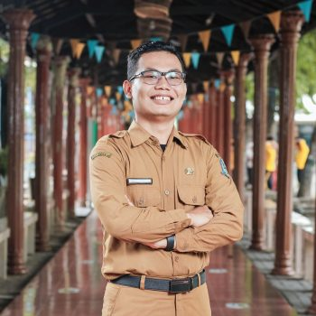
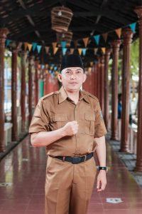
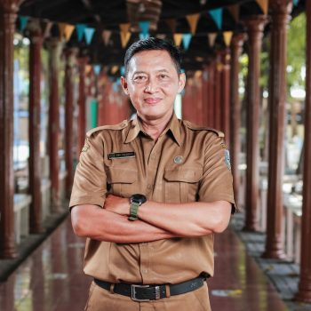
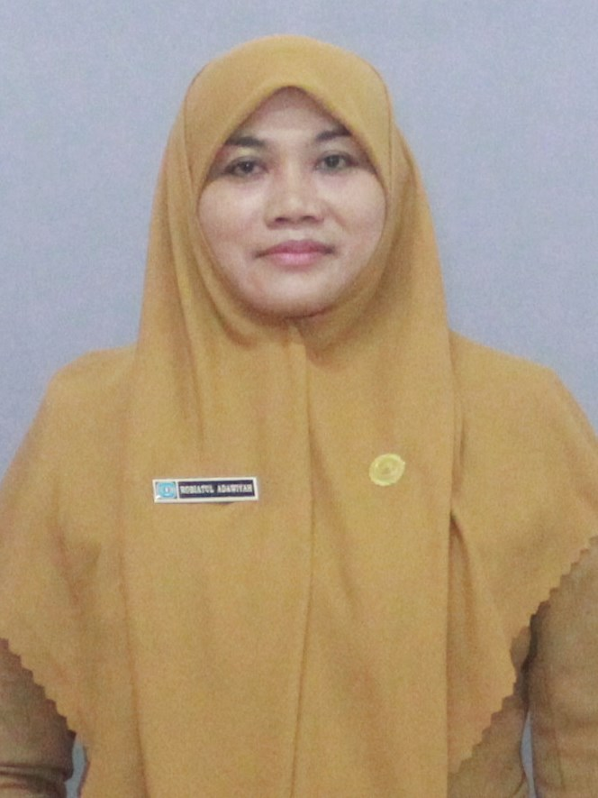
Guru-guru profesional berdedikasi tinggi yang mendidik putra-putri SMAN 15 Surabaya.
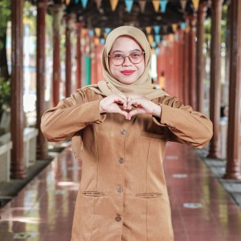
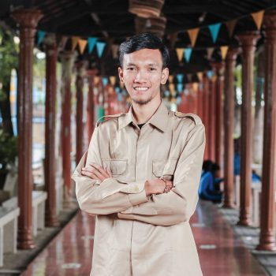
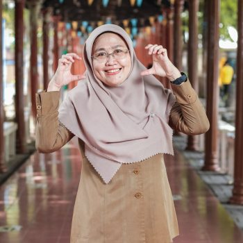
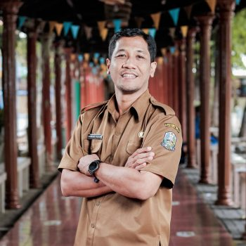
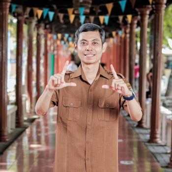
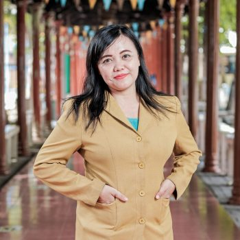
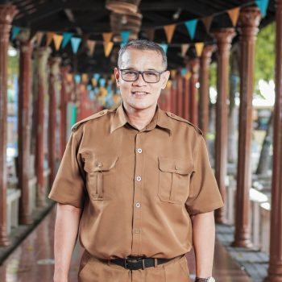
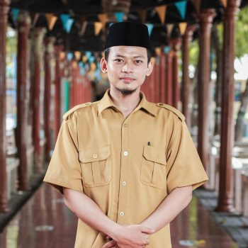
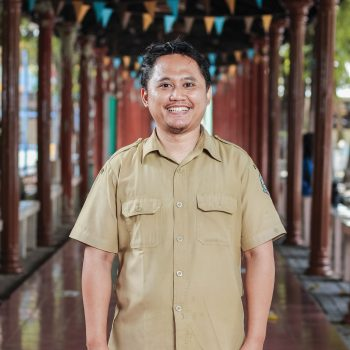
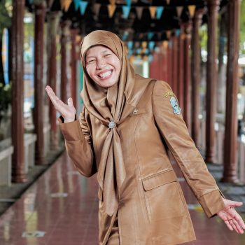
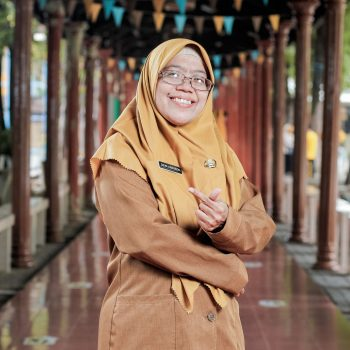
Fasilitas memadai dan berstandar nasional untuk menjamin kenyamanan belajar mengajar.
Koleksi ribuan buku fisik dan katalog digital (e-book), dilengkapi ruang baca ber-AC yang nyaman dan akses internet cepat.
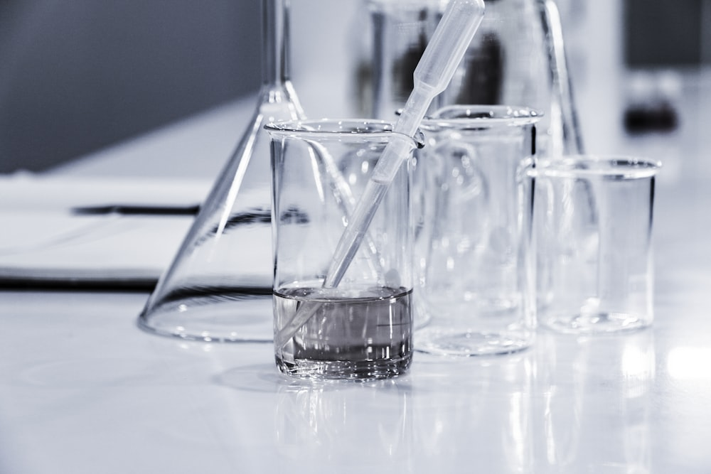
Laboratorium Fisika, Kimia, dan Biologi lengkap dengan peralatan uji canggih untuk kegiatan praktikum dan riset ilmiah siswa.
Tersedia unit komputer spesifikasi modern dengan jaringan fiber optik untuk asesmen nasional berbasis komputer (ANBK) dan kelas informatika.

Lapangan multifungsi untuk bola basket standar kompetisi DBL, futsal, bola voli, bulutangkis, serta upacara bendera.

Setiap ruang kelas dilengkapi proyektor LCD interaktif, pencahayaan alami standar kesehatan, dan konektivitas WiFi edukasi.

Gedung pertemuan untuk kegiatan seminar, pentas seni sekolah, serta Masjid Al-Ikhlas untuk pembinaan rohani siswa.